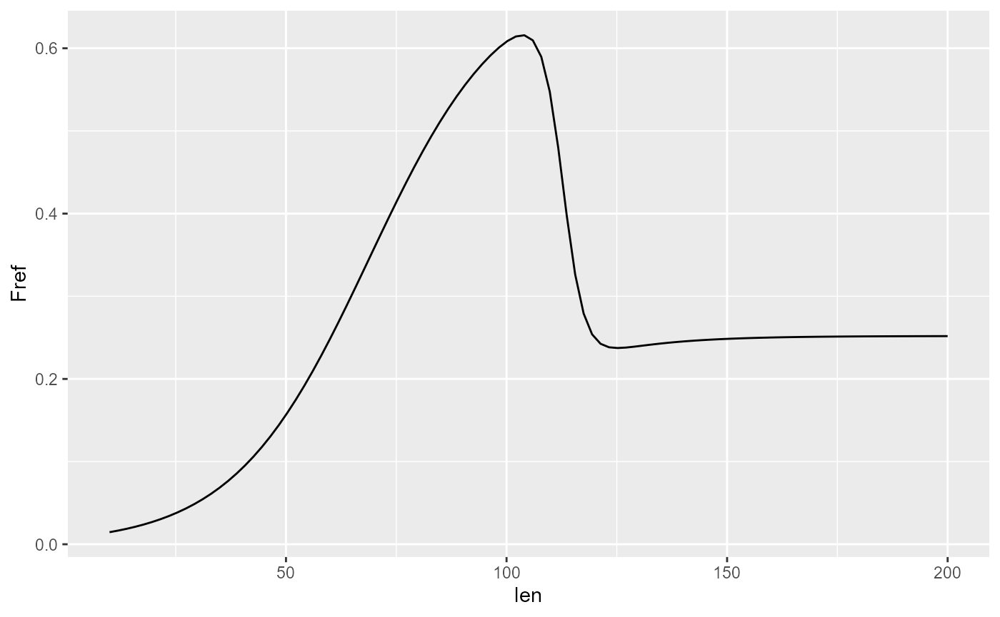
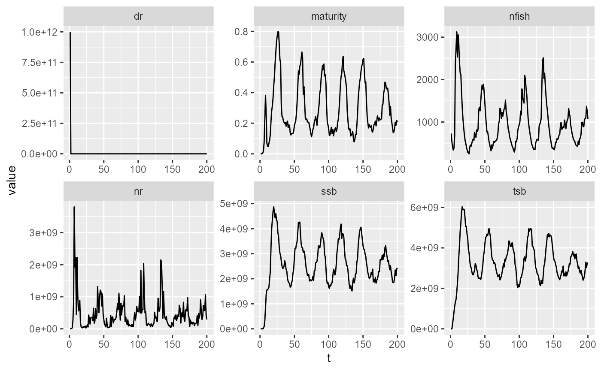

Fished Population and Stock Analysis
Jaideep
2026-04-09
quota_calc_debug.RmdFishery System Setup
To simulate a fishery, i.e., a fished population, we need a Stock to harvest, a Fleet that harvests it, and a Fishery that manages this interaction. A Fishery also contains a hypothetical unfished population, separate from the actual population that we will fish.
Fish and population parameters are the same as in the case of an unfished population. Fleet parameters must be defined in a separate parameters file. Each fleet needs its own parameters file.
Let us now set up the fishery system using parameter files for fleet and fish, and inspect initial parameters.
# define parameter files
params_file_fleet = here::here("params/fleet_1_params.ini")
params_file_spf = here::here("params/fleet_1s_params.ini")
params_file_fish = here::here("params/cod_params.ini")
# Create a prototype fish to construct the population
fish = new(Fish, params_file_fish)
# fish$natural_mort_scalar = 1
# fish$setMortalityCurveEmpirical(here::here("data/naturalmort.spline.csv"))
fish$par$print()
# Craeate the fishery. Note that we do not need to explicitly create a population - it is contained within the fishery
fishery = new(Fishery, params_file_fish, fish);
fishery$par$print()Fishery Simulation
Configure the fishery:
- set contol parameters, such as harvest proportion and min size limit
- add the fleet to the fishery
- A fishery simulation requires an estimate of the carrying capacity of the ocean, which is computed by simulating a hypothetical unfished population to equilibrium. This unfished population is also implicitly included in the Fishery class.
- Initialize the fishery - this creates fish in the real fish population.
h = 0.6
fishery$set_harvestProp(h);
fishery$set_minSizeLimit(45);
fishery$addFleet(params_file_fleet, T);
fishery$addSpawnerFleet(params_file_spf, T);
# Verify added fleet's fishing mortality curve
tibble(len=seq(10,200,length.out=100)) |>
mutate(Fref = purrr::map_dbl(len, ~fishery$get_fref(0, .x))) |>
ggplot(aes(x=len, y=Fref))+
geom_line()
# Simulate the Fishery's hypothetical unfished population to equilibrium
v = fishery$equilibriateNaturalPopulation(5.61, 2e6, 200);
fishery$set_superFishSize(2e6)
# Initialize the
fishery$init(1000, 0, 5.61);
v2 = fishery$equilibriateWithoutFishing(5.61, 200) |>
matrix(nrow=200, byrow=T) |>
as.data.frame() |>
setNames(c("ssb", "tsb", "maturity", "nr", "dr", "nfish"))
v2 |>
mutate(t = 1:200) |>
pivot_longer(-t) |>
ggplot(aes(x=t, y=value)) +
geom_line()+
facet_wrap(~name, scales="free")
# Just a demo calc of the initial quota corresponding to the set defined harvest proportion. The Fishery will recalculate this every year.
quota = fishery$calc_quota(5.61);
cat("Quota: ", quota, '\n')## Quota: 1669409757